Verkefni 2
Parametrísk hönnun og tölvustuddur skurður
Lokaafurð
Hér má sjá lokaútkomuna úr verkefninu.
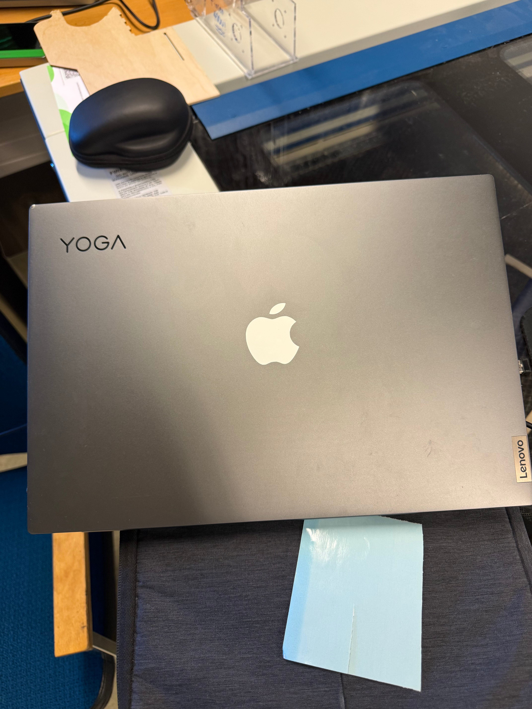
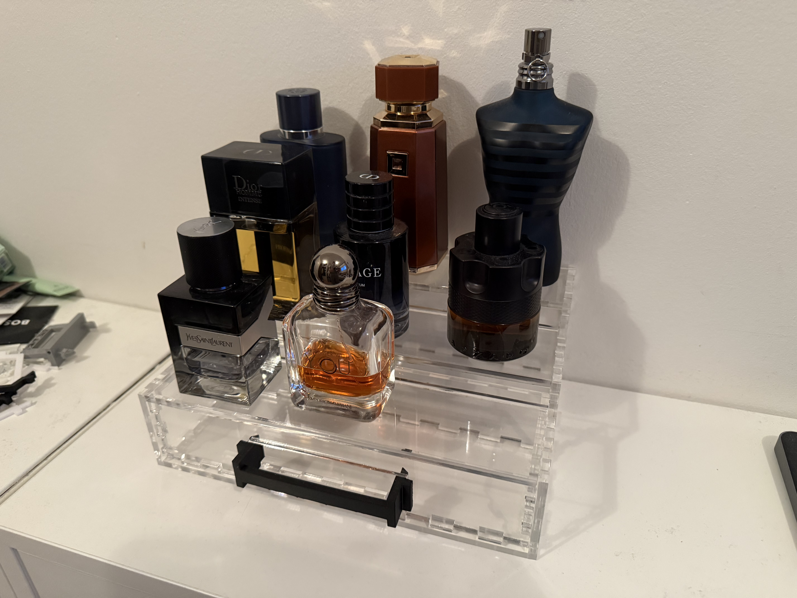
Vínylskurður
Ég byrjaði á að horfa á kynningarmyndband um verkefnið sjálft. Til að kynna mér betur hvað var í gangi, þá horfði ég á myndband um Inkscape og geislaskurð. Hugmyndaflugið fór strax í gang og ég flakkaði á milli ýmissa hugmynda. Fyrst vildi ég gera útlínurnar á Sam Sulek, youtuber og líkamsbyggingarmann, en ákvað að sleppa því því mér fannst að hárið hans myndi valda mér vandamálum með að losa límmiðann. Næsta hugmynd var að gera tákn úr bókaseríu sem ég las nýlega, Mistborn. Ég endaði þó á því að sleppa því þrátt fyrir að hafa komist langt með útfærsluna.
|
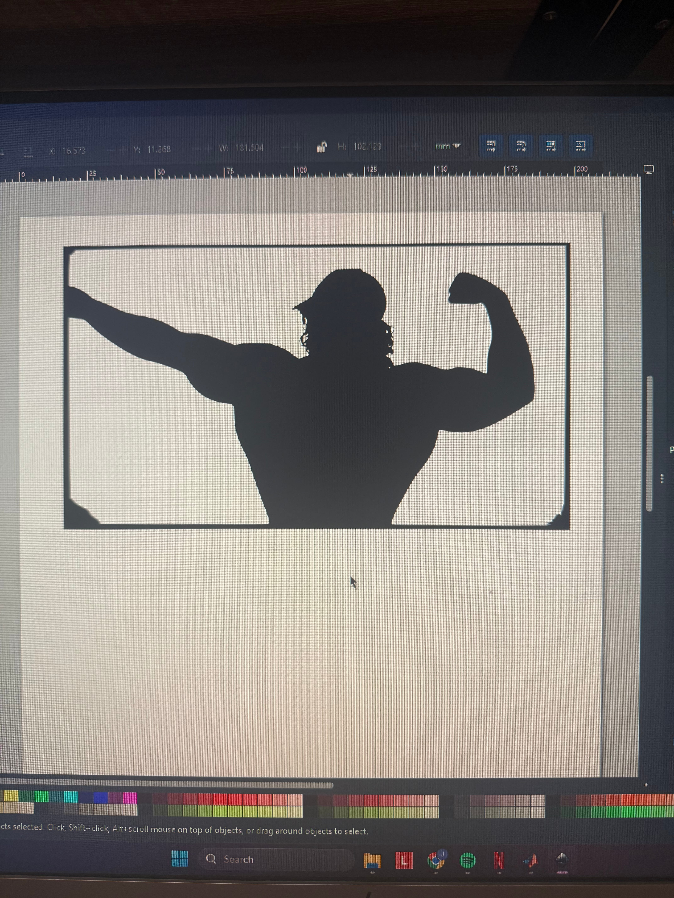 |
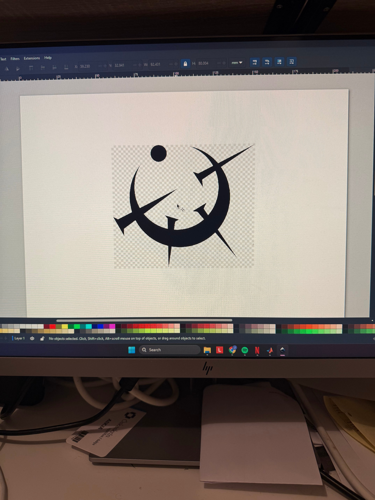 |
| Sam Sulek | Atium táknið úr Mistborn bókaseríunni |
Að lokum ákvað að gera Apple logo límmiða fyrir tölvuna mína (sem
er vissulega ekki Apple tölva). Ég leitaði að "silhouette" mynd af
merkinu og copyaði hana. Síðan fylgdi ég leiðbeiningunum í
myndbandinu nokkuð ítarlega, límdi fyrst myndina inn á Inkscape.
Til að reyna blekkja fólk vildi ég hafa límmiðann eins líkan
alvöru merkinu á tölvum svo ég fann málsetningarnar á merkinu og
hermdi eftir. Myndin endaði í sirka 39 mm breidd og 47 mm hæð. Ég
notaði svo Trace Bitmap á myndina til að breyta í vigramynd. Næst
setti ég Fill>No fill, Stroke paint>Flat color og Stroke style>
Width 0.02 mm. Myndin leit þá svona út:
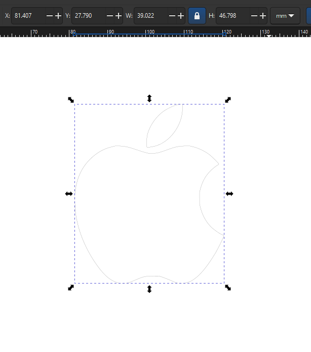 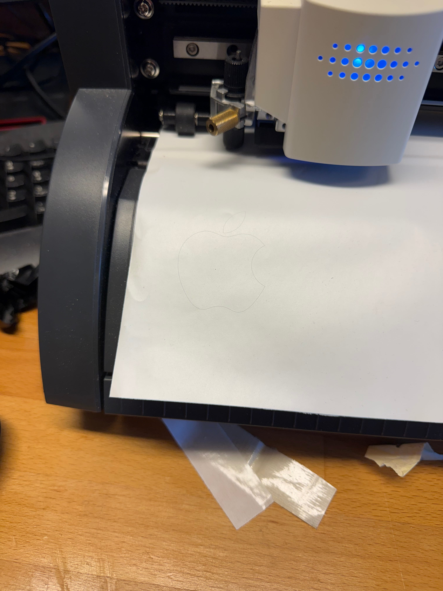 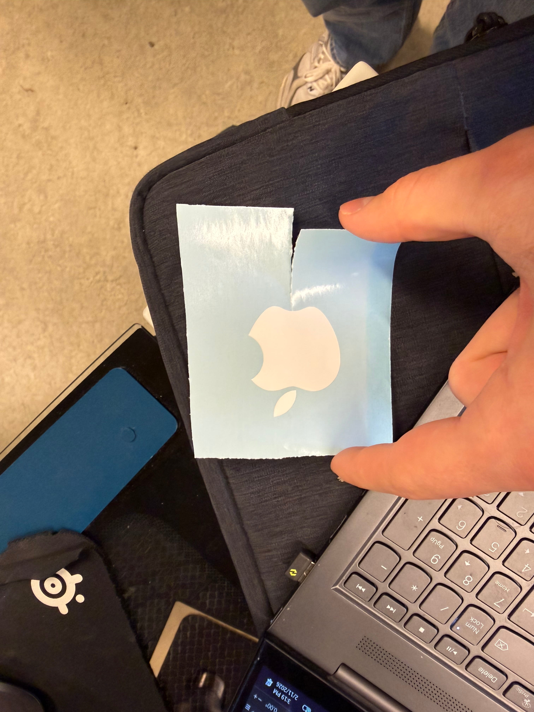
Ég skar hann svo úr pappírnum og tók allt í kringum límmiðann af:
Loks límdi ég hann á tölvuna mína. Ég ákvað að nota ekki transfer
pappír því límmiðinn var svo lítill, svo ég tók hann af með
höndunum og límdi bara. Lokaafurðina má sjá hér fyrir neðan:
Parametrískt, geirneglt (pressfit) módel
Undirbúningur og hugmyndaleit
Eftir að hafa horft á kynningarmyndbandið eins og nefnt var áður
leit ég aðeins í kringum mig. Mig langaði að hanna eitthvað
gagnlegt og einfalt. Eftir smá umhugsun blasti við mér eitthvað
sem ég gæti lagað. Ég tók eftir að ég ætti marga rakspíra og
vantaði góða hillu til að geyma þá í.
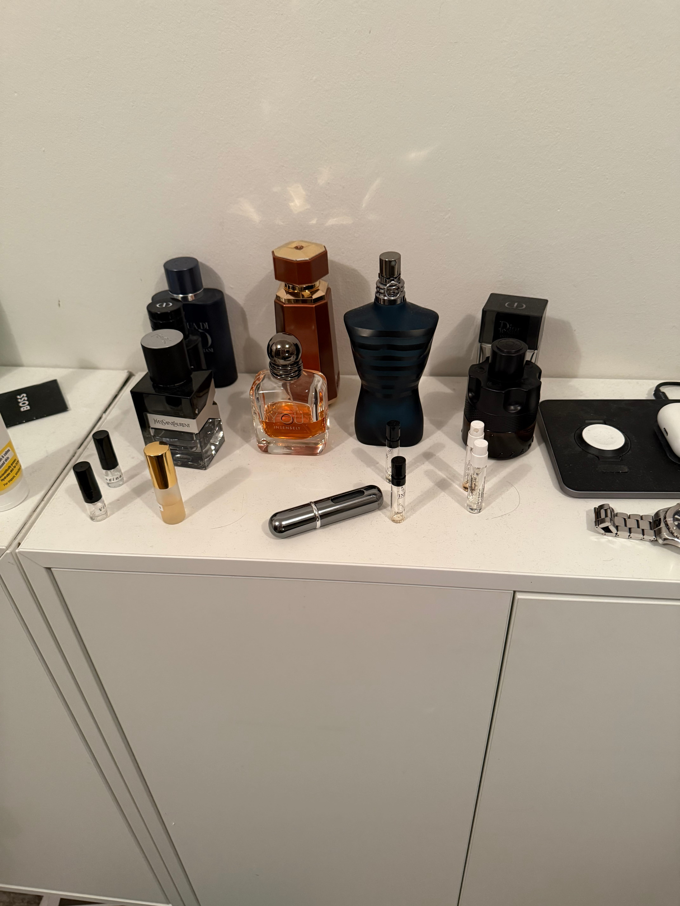
Eins og sést á myndinni hér fyrir ofan, þá eru rakspírarnir í
mismunandi stærðum og það var mikilvægt að hanna hilluna þannig að
hún gæti geymt alla ásamt mögulegum framtíðar rakspírum. Einnig á
ég slatta af prufum sem ég vildi geyma á góðum stað líka. Hér
fyrir neðan má sjá smá riss af hugmyndinni:

Ég gerði ráð fyrir þremur hæðum og plássi fyrir u.þ.b. 4 rakspírum
í hverri hæð. Lengdin á kommóðunni minni er sirka 25 cm svo ég
hafði hilluna 24 cm. Framan á hillunni gerði ég pláss fyrir skúffu
með gati fremst, en mig langaði að sameina Verkefni 3 í þetta og
3D prenta Snap-Fit handfang á hana. Til að byrja með var áætlunin
að gera hilluna úr 6 mm krossvið vegna útlits.
Kerf prófun
Áður en ég gat byrjað á hönnuninni vildi ég gera kerf prófun til
að skoða radíus geislaskerans, enda þarf að reikna með honum við
teikningu á módelinu til að fá góða geirneglingu. Í þessum hluta
vann ég með Benedikt Kristin Briem og Bjarna Hauksson. Við fengum
þær fréttir að það verður ekki í boði að nota krossvið svo ákveðið
var að gera kerf prófun á 5 mm akrýl (og ég notaði það efni í
framhaldi verkefnisins). Til að afla okkur upplýsinga fundum við
gamlar heimasíður og sáum hvernig þau gerðu þetta. Helst má nefna
síðuna hjá
Theódór Henriksen. Við ákváðum að hafa kerfið einfalt, 20 30mmx6mm bitar í stærri
ramma. Fusion var notað til að teikna og skjalið sent svo yfir í
tölvuna sem er tengd við leisiskerann sem DXF file. Skjalið var
aðeins fiffað til og sent í skurðartækið.
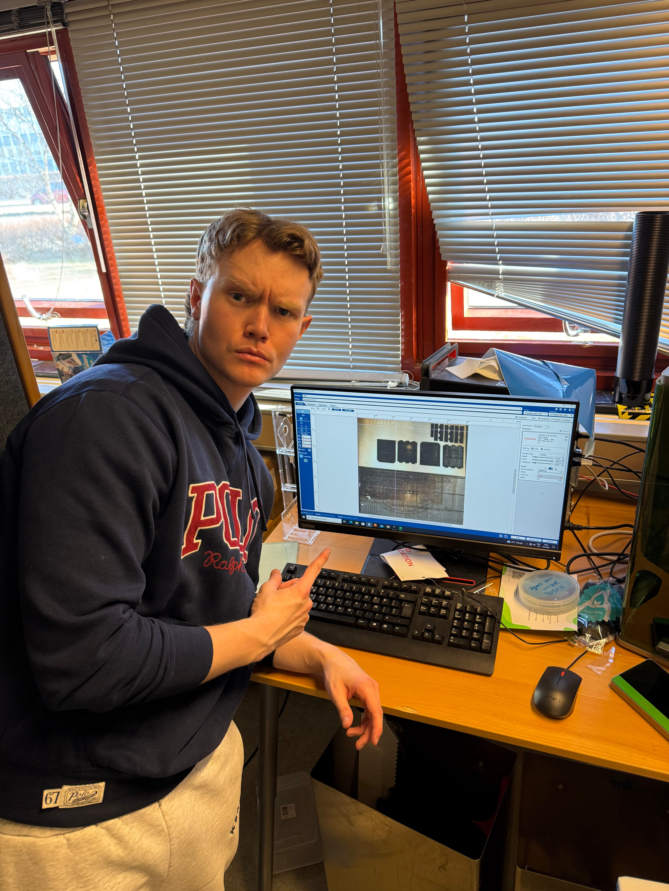 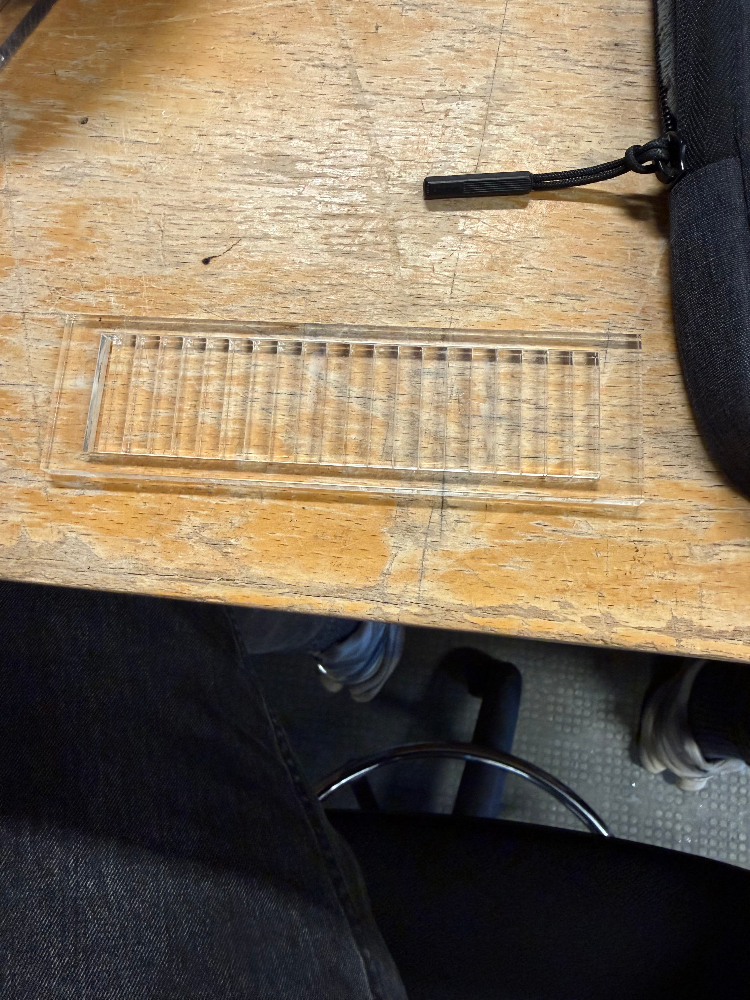 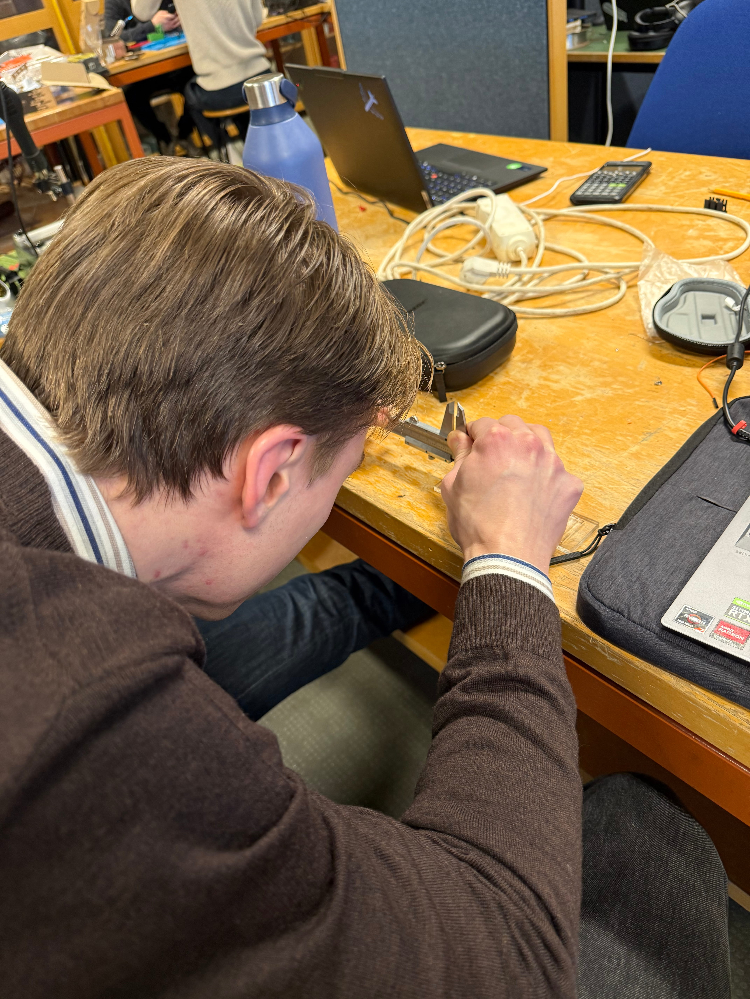
Eins og glöggir tóku eftir er myndin hér fyrir ofan með viðarplötu
og færri bita. Þetta var ein af (allt of) mörgum prófunum sem
gengu ekki upp. Eins og nefnt var áður, gátum við ekki notað
krossvið. Auk þess voru bitarnir það fáir að við komum ekki
skífmálinu milli seinasta bitans og rammans, til þess að mæla
bilið. Til að bæta gráu ofan á svart, var teikningin sjálf
misheppnuð, sumar línur komu fram tvisvar og leisiskerinn skar þá
tvisvar í sama stað og skemmdi þar með kerfið. Við komumst að
þessum villum gegnum nokkrar prófanir og endurbætur, en í lokin
fengum við þetta:
Hönnun
Þar sem ég hafði nánast enga reynslu á Fusion 360 ákvað ég að
horfa á nokkur vídeó til að byrja með. Ég horfði fyrst á
myndbandið
Parametrar 1
til þess að átta mig á parametragerð. Síðan horfði ég á
Finger-joints: Fusion 360
sem var mjög gagnlegt og ég lærði í rauninni allt sem ég þurfti
til þess að teikna í því myndbandi. Líkt og í myndbandinu byrjaði
ég á að teikna eina plötu, en ég valdi bakplötuna. Ég fór síðan
koll af kolli, teiknaði hverja plötu út frá þeirri á undan og
hafði fingurna á brúnunum eins og í myndbandinu. Hér fyrir neðan
má sjá hvernig þetta kom út.
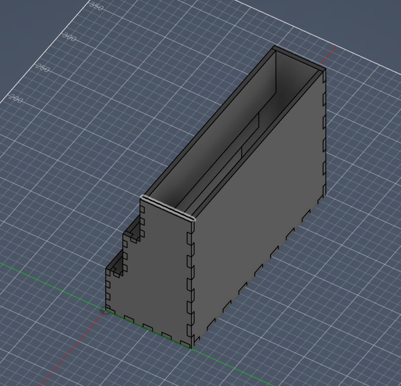 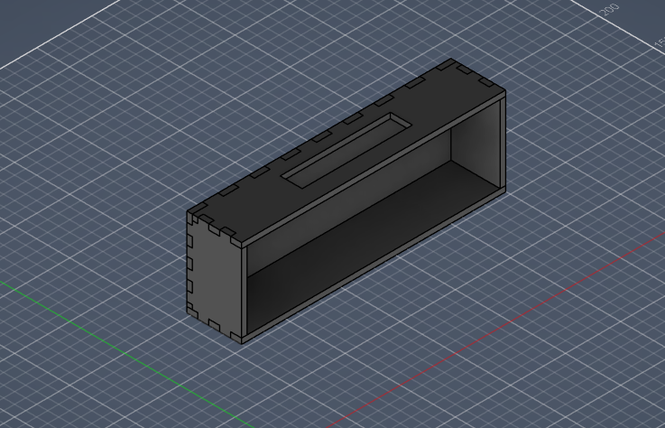 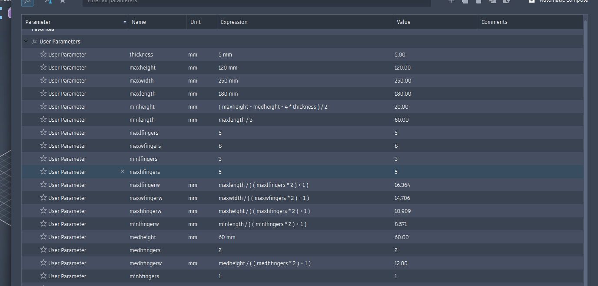 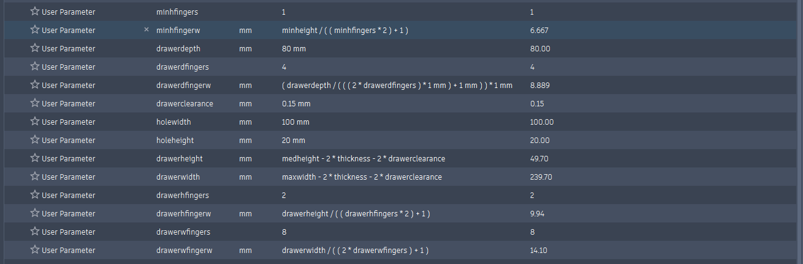
Ég teiknaði svo skúffuna sér í lagi. Til að byrja með gerði ég
hana beint ofan á hilluna sjálfa, en þar mynduðust allskonar
vandamál þegar parametrum var breytt, þar sem skúffuteikningarnar
voru festar í Projected lines frá hillunni sem hliðruðust. Ég
ákvað því að teikna skúffuna sér í lagi, við hliðina á hillunni.
Hér má sjá skúffuna og parametrana mína.
Parametrana hannaði ég að mestu leyti eins og í myndbandinu, ég
hafði sér hæð, breidd og lengd ásamt fingrafjölda og reiknaði
fingrabreiddina út frá því. Hér lenti ég í smá veseni því ég hafði
ekki skilgreint allar fjarlægðir með parametrum og þegar ég
breytti einhverjum þá breyttist allt og ég þurfti að laga það. Ég
lærði þó mikið í þessum hluta og fannst gaman að leika mér með
parametrana og sjá hvernig þeir höfðu áhrif á hönnunina.
Undirbúningur fyrir skurð
Þegar hönnunin var komin þurfti ég að undirbúa hilluna fyrir
skurð. Ég bjó til aðra möppu í Bodies og afritaði bæði skúffuna og
hilluna. Síðan notaði ég Align og Move til að fletja út allar
plötur og raða þeim upp á 500x500mm reit sem ég teiknaði. Mér
fannst þetta þó frekar tæpt þannig ég minnkaði stærðina á
hillunni, breiddina í 250 mm, hæðina í 120 mm, lengdina í 180 mm
og dýpt skúffunar í 80 mm (enda þurfti ekki meira fyrir prufurnar
mínar). Þrátt fyrir þessar breytingar var þetta ennþá smá tæpt,
þar sem ég þurfti að gefa leisiskeranum smá bil á milli brúnanna,
þannig ég ákvað að skera eina plötu sér og hinar saman. Hér sést
hvernig plötunum var raðað upp (mínus þessi eina sem var sér):
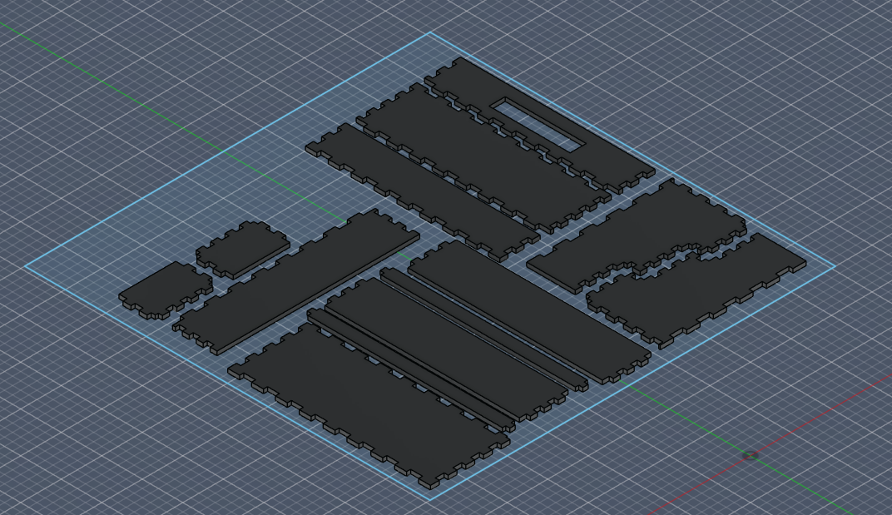 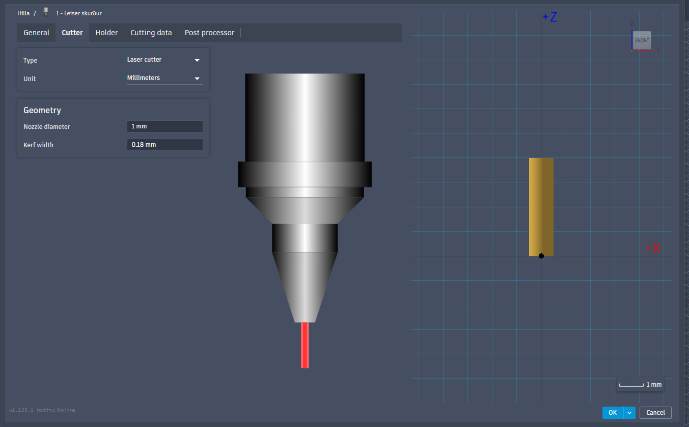 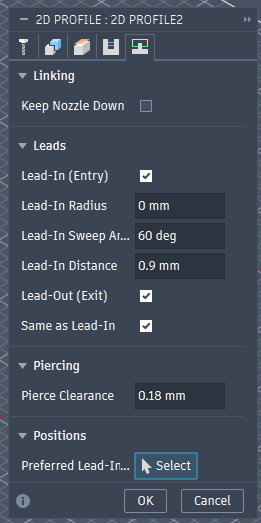 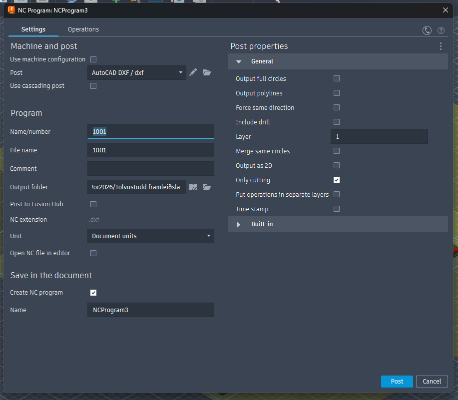
Ég þurfti svo náttúrulega að reikna með kerfinu í teikningunni,
þannig ég horfði fyrst á
þetta
snilldarmyndband sem kenndi mér allt. Í framhaldi þess fór ég í
Manufacture gluggann í Fusion, bjó til nýtt Setup og valdi 2D
Profile. Fyrst þurfti ég að setja inn kerf gildið mitt, en
restinni var haldið óbreyttu. Svo valdi ég öll yfirborðin sem átti
að skera, valdi Compensation type>In computer og afhakaði Lead in
og Lead out (skv. gæjanum í myndbandinu).
Þá var komið Setup og ég valdi Post Process, breytti nafninu,
afhakaði Include drill og hakaði við Only cutting.
Næst exportaði ég Setup-inu sem DXF file og það var tilbúið fyrir
skurð.
Skurður: Prufa
Áður en ég skar út hilluna mína vildi ég gera prufu til að sjá
hvort kerfið væri í lagi. Ég teiknaði tvo litla kassa í Fusion með
fingrum á og notaði aðferðirnar sem ég nefndi hér fyrir ofan til
að exporta sem DXF. Ég opnaði svo DXF skjalið í Inkscape og
stillti það þannig að stærðin væri rétt (eins og límmiðann hér
fyrir ofan). Ég passaði mig að velja rétt efni og þykkt í
leisiskeraforritinu og byrjaði svo skurðinn.
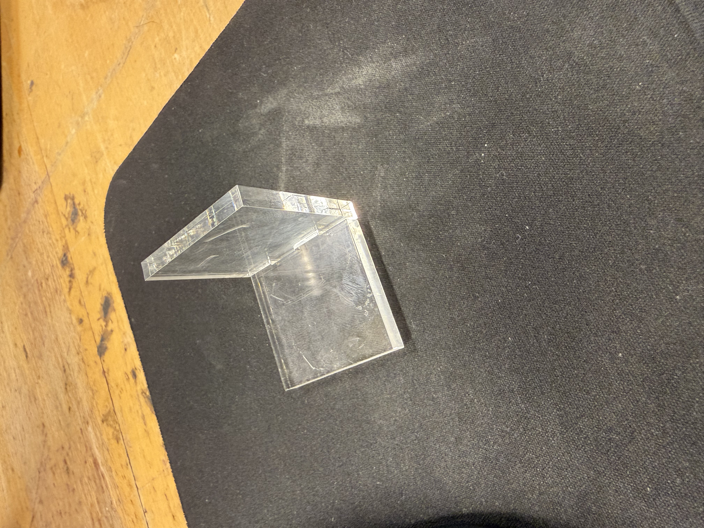
Skurður: Hillan
Að skera út hilluna og skúffuna var ekki alveg jafn einfalt. Sömu
skref og fyrir prufuna voru framkvæmd, en leisiskerinn náði ekki
að skera suma bita alla leið í gegn. Þar sem skurðurinn gekk vel á
bitum sem voru skornir nálægt brúnunum má álykta að platan sjálf
hafi verið smá bogin ásamt þvi að leisiskerinn var með vesen. Ég
þurfti því að skera hvern bita í plötunni sér í lagi, til að
athuga hvort hann skærist rétt. Ég fiffaði hraðann á leisiskeranum
aðeins til og endaði alveg í 5% hraða sem skilaði loksins góðum
skurði. Áður en ég komst að því þurfti ég að skera í hvern bita
tvisvar, sem gerði það að verkum að sumir bitar voru með örlítið
stærra bil á milli (eða kerf). Hér sést lokaafurðin (með handfangi
sem lesa má meira um í verkefni 3):
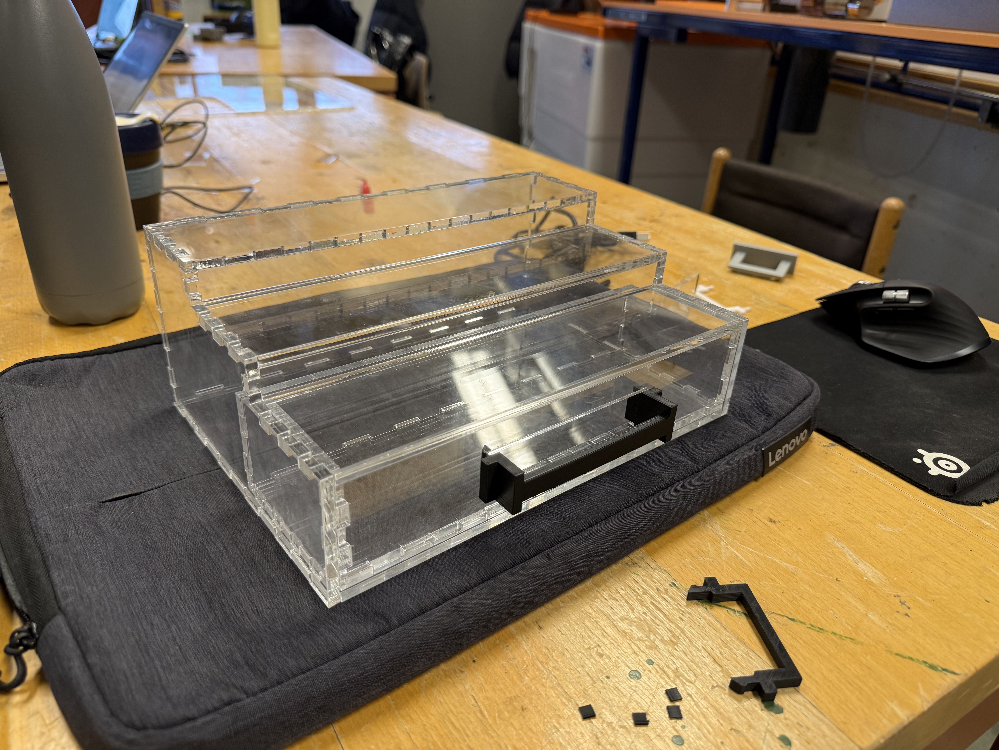
Gagnabanki
Öll hönnunarskjöl má finna hér.